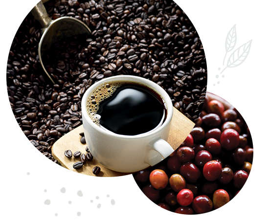

스타벅스

- From Bean To Cup
- 스타벅스는 커피 원산지부터 매장까지 환경 발자국 줄이기 위해 노력하고 있습니다.
- 친환경 원두 구매
- 스타벅스는 자체 친환경 원두 구매 가이드라인인 C.A.F.E Practice를 통해
커피 원산지의 환경을 보호하며 사회, 경제적 여건을 향상시켜 최상질의 원두 커피를
안정적으로 공급받을 수 있도록 전 세계 커피 농가와 지난 30여 년간
장기적인 상상 협력 관계를 구축해오고 있습니다.

친환경 활동
스타벅스는 탄소 발자국을 줄이기 위한 다양한 노력을 기울이고 있습니다.
스타벅스는 친환경활동의 일환으로, 18년 11월 종이 빨대와 나무 스틱을 전국 매장으로 확대하면서 빨대 없이 마실 수 있는 아이스컵 뚜껑도 함께 소개하며 제품 포장을 위한 비닐 포장재는 친환경 소재 포장재로 변경해 1회용 플라스틱 사용 절감을 통한 친환경 활동을 시행하고 있습니다.
또한, 전국 스타벅스 매장에서 텀블러에 음료를 구매 시, 400원 할인 혹은 에코별을 증정하며 다회용컵 이용 고객에게 혜택을 드리고 있습니다.